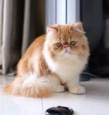
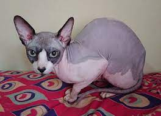

Selamat Datang
Saya Hasin Bashari Panansah dengan nim 10121187
Kucing Persia
Kucing Persia merupakan kucing ras yang banyak dipelihara di Indonesia. Ciri khas kucing ini adalah hidung pesek, badan gemuk, dan berbulu tebal. Berikut ciri, jenis, dan gambar kucing persia.

Kucing Abisnia
Kucing abisinia adalah salah satu ras kucing berbulu pendek tertua yang pernah diketahui. Abisinia menyerupai lukisan dan patung yang berasal dari zaman Mesir Kuno.

Kucing Sphnyx
Sphynx merupakan salah satu ras kucing dengan penampilan yang begitu berbeda dari kucing pada umumnya.
